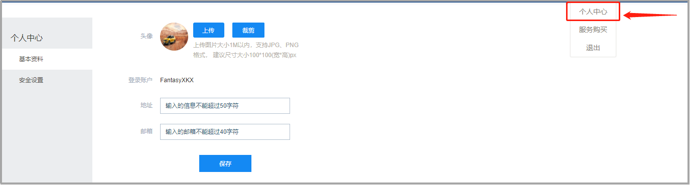
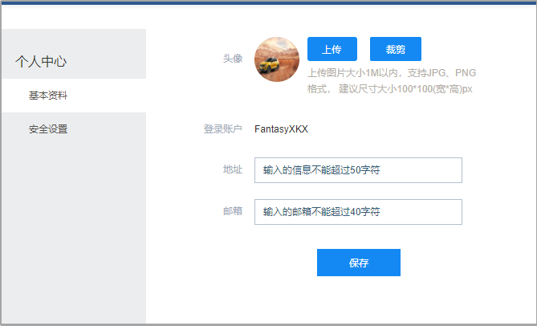
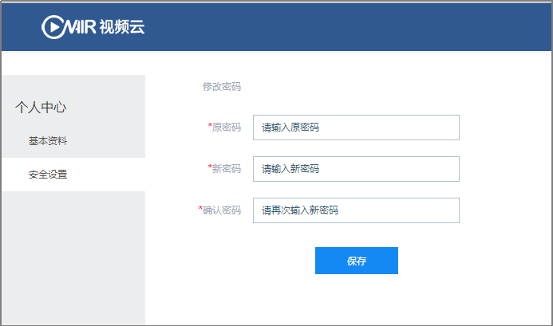
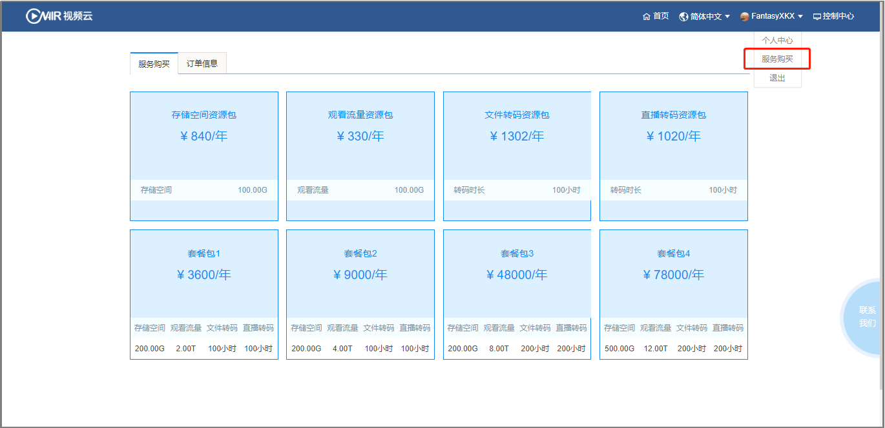
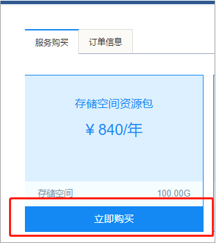
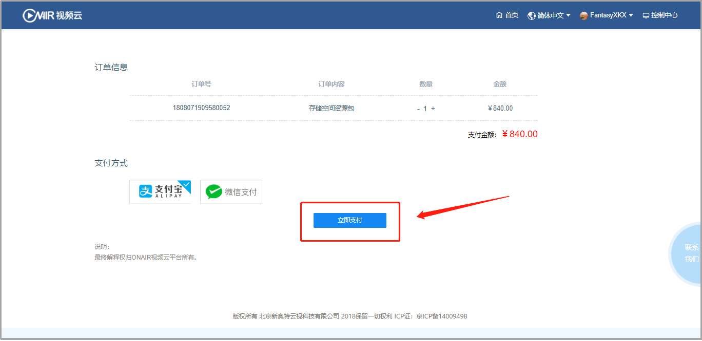
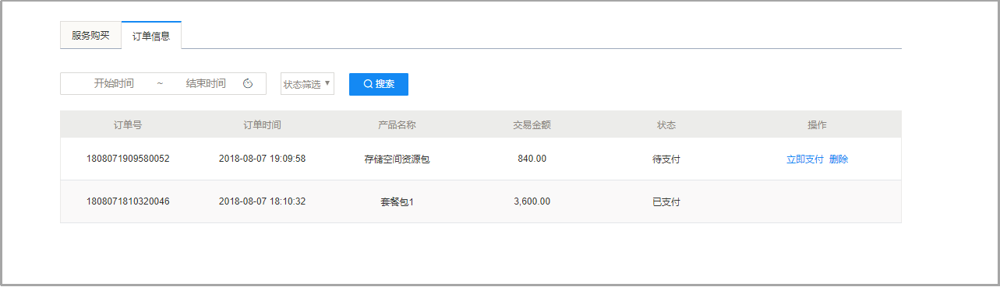
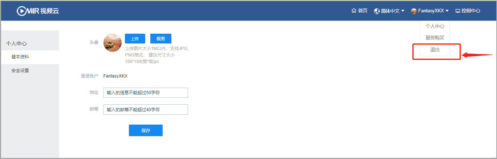

8. 用户中心
8.1个人中心

图 3-8-1-1 个人中心
提供当前登录用户资料修改与安全设置：
- 基本资料

图 3-8-1-2 基本资料
支持当前登录用户头像上传与裁剪，确认当前用户的地址与邮箱合理有效。
图 3-8-1-3 头像裁剪
- 安全设置

图 3-8-1-4 安全设置
输入原密码，并确认新密码设定，完成后保存。
8.2服务购买
- 购买

图 3-8-2-1 服务购买
点击“服务购买”，显示当前系统提供的资源包与套餐服务，同时可点击“立即购买”，进行购买。

图 3-8-2-2 立即购买
可跳转至支付页面，进行支付购买：

图 3-8-2-3 立即支付
- 订单详情

图 3-8-2-4 订单详情
可查看当前购买资源的详情，也可对误选资源包与套餐进行删除操作。
8.3退出

图 3-8-3-1 退出
点击退出，退回登录页面。